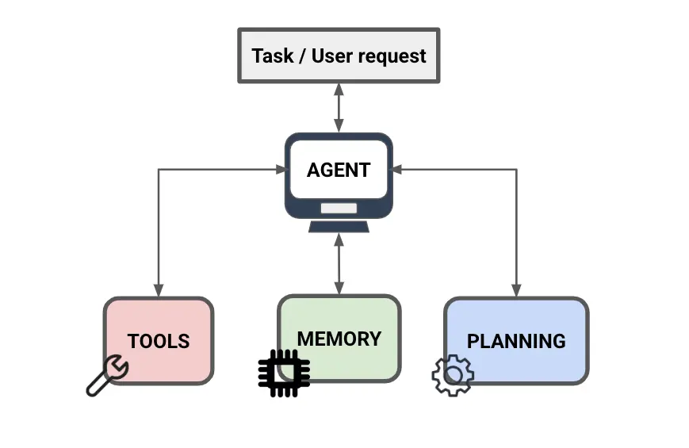

Core Components of an AI Agent
-
The Model (The Brain): The model is the central component for planning, predicting, and selecting actions. It is typically a Large Language Model (LLM) with capabilities for reasoning, planning, and tool selection.
-
The Tools (The Hands): Tools extend the agent's capabilities, allowing it to interact with external data and services. This includes Function Calling, where the LLM decides when to use a function, and Data Store augmentation (like RAG) to overcome static knowledge limitations.
-
The Memory (The Experience): Memory enables the agent to learn from past interactions and maintain context across conversations. This includes both short-term memory for current tasks and long-term memory for persistent learning.
